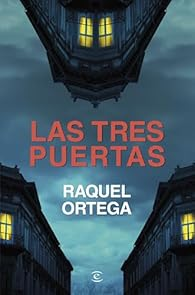

Habitos atomicos
Descripción:Este libro se enfoca en cómo cambiar los hábitos diarios puede transformar completamente nuestra vida. James Clear explica que no se necesita un cambio drástico, sino la acumulación constante de pequeñas mejoras. A través de ejemplos claros y consejos prácticos, enseña cómo diseñar un sistema que haga más fácil construir hábitos positivos y eliminar los negativos. Ideal para quienes buscan superarse paso a paso
Reseña:Me encanta leer libros de crecimiento personal y este libro es perfecto para la procrastinación, cómo mantener un hábito e introducir de nuevos y una gran motivación para no procrastinar, organizar y aprovechar al máximo tu dia a dia con ejercicios.Me ha encantado!
Más información.El pacto invisible
Descripción:Una reflexión profunda sobre las relaciones humanas y los acuerdos no hablados que establecemos desde niños. Bucay analiza cómo estos "pactos invisibles" nos condicionan en la adultez, afectando la forma en que nos relacionamos con los demás. Es un libro de crecimiento personal que invita a cuestionar nuestras creencias, entender nuestras emociones y reconstruir vínculos de manera más consciente.
Reseña:Novela interesante, fácil de leer. Continua con los personajes de la novela anterior. Bien ambientada y documentada. La historia se hace amena y siempre quieres leer un poco mas. Recomendables los dos libros de la autora. Esperaremos la siguiente novela.
Más información.Las tres puertas
Descripción:Una historia juvenil de autodescubrimiento y fantasía, que narra el viaje de Lía, una adolescente que recibe la misión de cruzar tres puertas mágicas para cumplir su destino. Cada puerta representa un desafío emocional y una lección de vida. Es una novela cargada de simbolismo, con un mensaje claro sobre el poder de la elección, el miedo, y el valor de seguir adelante pese a las dudas.
Reseña:Hay autores cuya PLUMA tiene su propia señal de identidad, igual que algunos cantantes con sus voces. Y esto ocurre cada vez que me pongo delante de un libro de Raquel Ortega.
Más información.